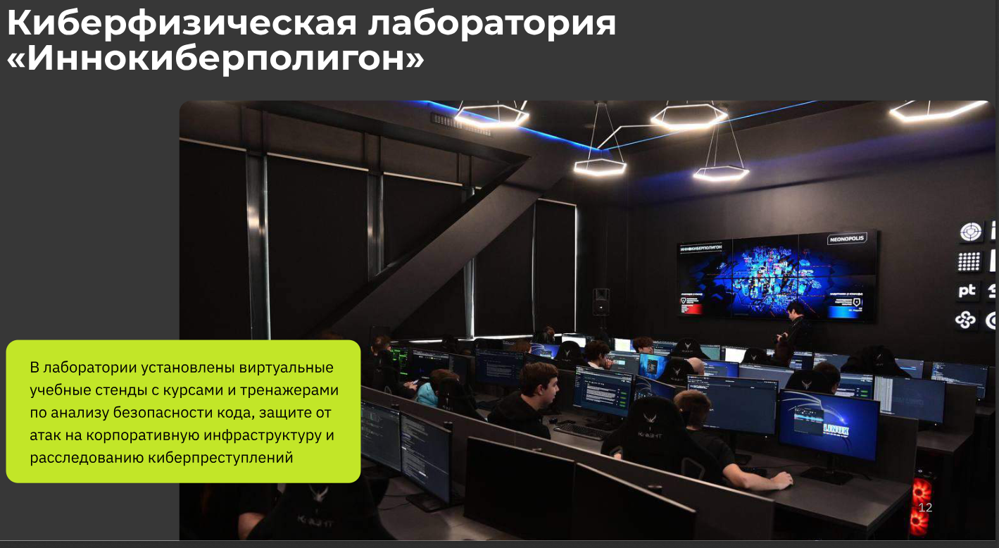
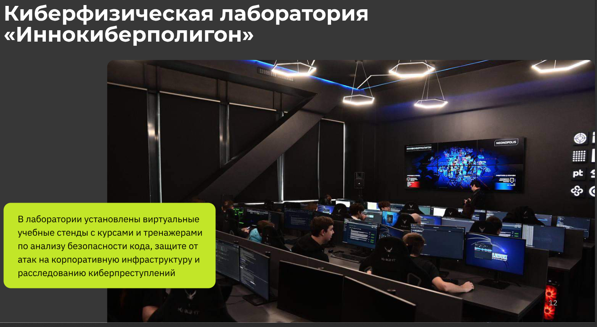

3. Разработка статического веб-ресурса
✅ Сайт написан
- Главная — краткая аннотация проекта.
- О проекте — введение, проблемы и их возможные варианты решения.
- Участники — информация об участниках и их индивидуальном вкладе в проект.
- Журнал — 3+ обновления с хронологией прогресса.
- Ресурсы — ссылки и информация о других киберполигонах.

 
